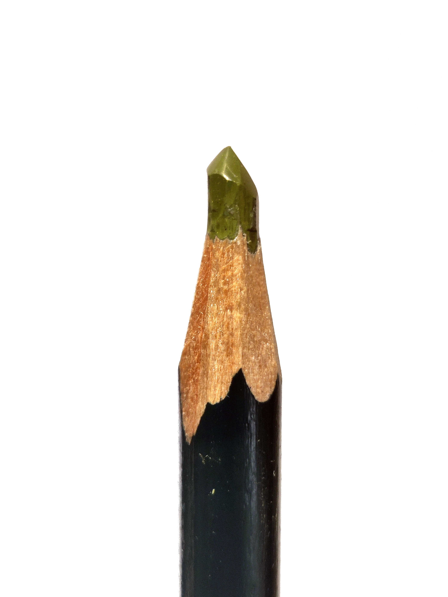
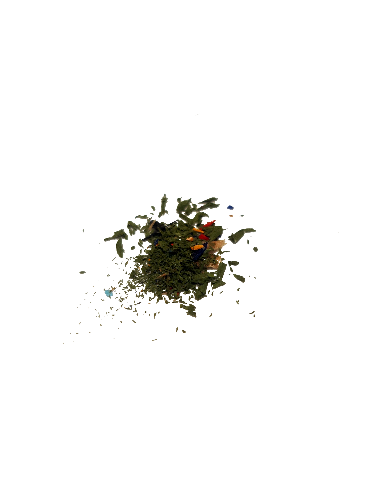

«Could I interest you in everything, all of the time? / A little bit of everything, all of the time? / Apathy is a tragedy, and boredom is a crime, / Anything and everything, all of the time!» — Bo Burnham, «Welcome to the Internet»
«Millom bakkar og berg ut med havet, heve nordmannen endelig fått installert fiber og 5G fra Telenor». Det er over 160 år siden Ivar Aasen skrev diktet «Nordmannen». Mye har skjedd i samfunnet vårt siden den gang. Norge er ikke lenger en værbitt utpost langt unna alt, men midt i verden, som alle andre steder. Hva vi bedriver i den virkelige verden blir raskt enten sekundært eller totalt avhengig av hva som foregår på de digitale plattformene. Selv smelteverk og renovasjonsselskap har hver sin omdømmespesialist og SoMe-manager, og suksess måles i engasjement og klikk. Oppmerksomhet er valutaen, og kampen om den blir stadig mer spisset. Internasjonale selskaper innoverer hele tiden, og oppdager stadig vekk nye formater for å gjøre oss enda mer avhengige av den konstante strømmen med distraksjoner.
Da amerikanske tegneserier gjorde sitt inntog på norske tv-kanaler, var uroen stor for at barn og ungdom skulle utvikle firkantøyne og bli voldelige, kapitalistiske gangstere. I dag minner disse seriene mer om «Hurtigruta minutt for minutt», sammenliknet med hastigheten og intensiteten på mediekulturen vi omgir oss med i dag.
Å bli født inn i denne kulturen kan være en forbannelse. Fra du er fire år gammel plasserer forsørgerne dine en iPad i fanget ditt, så du skal holde kjeft og oppføre deg på toget. Om foreldrene dine anser seg selv som over snittet opplyste og ansvarlige, har de kanskje satt seg ned og forsøkt å finne den pedagogisk beste barneunderholdningen, som i litt mindre grad overøser synapsene dine med en konstant strøm av friske farger og skjærende lyder.
Så begynner du på barneskolen og får utdelt et såkalt læringsbrett. Dette fordi noen politikere sent i femtiårene, som selv trenger tre forsøk på å plugge inn en USB riktig vei og sliter med å logge inn med Bank-ID, har blitt overbevist av noen fremtidstro konsulenter om viktigheten av tidlig digital opplæring. Men, for å skjerme elevene fra alt det grusomme som det er mulig å finne på internett, leveres brettene med en så polstret og kunstig avgrenset programvare at det er umulig å få en meningsfylt kompetanse på IT. Det er som å gi et barn en kniv med eggen slipt bort av hensyn til sikkerheten. Resultatet er at barnet hverken lærer å bruke kniven, eller lærer seg at den kan være farlig.
Frem til en sju-åtte års alder, klarer kanskje foreldrene dine å begrense deg til en smartklokke, før de til slutt gir etter for gruppepresset og gir deg din egen smarttelefon. Derfra er det fritt frem, til ubegrensede mengder av informasjon og underholdning av varierende pedagogisk og etisk karakter.
I vår verden er ingenting gratis, som betyr at hvis vi ikke trenger å betale for noe, er det fordi det er vi, og informasjonen vår som er produktet. En konstant strøm av informasjon om livene og vanene våre samles ukritisk inn av enorme internasjonale konglomerater til alle døgnets tider. Samtidig mater de oss kontinuerlig med en strøm av meningsløse distraksjoner, og trekker ut informasjon om interesser, handlingsmønstre, døgnrytme og hyppighet av dobesøk. Vi er klar over situasjonen, men hver liten opprørsk handling, hvert lite forsøk på å ikke følge strømmen krever en liten anstrengelse, en liten kjedsommelig handling. Vi vet at det er sånn, men livet er lettere om man bare sier ja til cookies.
Resultatet er at vi prostituerer vår egen og våre barns oppmerksomhet, selvstendighet og frie tankemønstre, i bytte mot jevnlige dopamininnsprøytninger og en stadig mer skreddersydd medie- og nyhetsvirkelighet. Vi ender opp som voksne mennesker som vandrer gjennom livet med en konstant underliggende rastløshet. Vi har en kraftig nedsatt evne til å fundere, og til å føre en sammenhengende tankerekke. Alle «mellomrommene» i livet fylles med noe, enten det er en åpenbart uvesentlig distraksjon, eller enda verre, en distraksjon kamuflert som noe informativt og karakterbyggende. Vi lever livene våre kontinuerlig med en visshet om at: «Jeg kunne, i dette øyeblikk, vært totalt underholdt og tilfredsstilt.»
Jeg er også et produkt av min tid. Før min ti minutter lange gåtur til og fra universitetet, må jeg ta et aktivt valg om å la være å sette på musikk eller en podcast, for å gi hodet litt pause. Først utløses noen abstinensrelaterte symptomer, som gradvis avtar etter hvert som jeg får gått av gårde. Når jeg kommer til tegnesalen, brygger tekoppen og åpner PC-en, er veien enda kortere til titusenvis av små muligheter for å bli underholdt. Det kan vel ikke skade med en … liten smakebit?
For de av oss med middels god, til dårlig impulskontroll er en digital skole- eller arbeidshverdag en kamp. En melding, en epost, et varsel om en nyhetssak. Distraksjoner i alle former melder seg med jevne mellomrom. Den utømmelige smågodtposen vi har i lomma frister kraftig, og kan når som helst avspore enhver konstruktiv tanke vi måtte påbegynne.
Men, noen ganger, så hender det at jeg opplever å bli virkelig grepet av arbeidet mitt. Mulig det er den mye omtalte «flytsonen» det er snakk om. Det skjer nesten aldri når jeg sitter foran PCen, men heller når jeg foretar meg noe fysisk. En gang tidligere i år satt jeg og spisset noen blyanter med en tapetkniv, da jeg med ett ble oppmerksom på at jeg var helt alene i hodet mitt, sammen med blyantene og kniven.

I venstre hånd holder jeg en fargeblyant. Den er så lang en blyant er etter å ha blitt spisset to eller tre ganger, den har en glatt overflate, og pigmentet har en dus mosegrønn farge. Den er en av flere blyanter jeg trenger å spisse fordi jeg har brukt den en del, og jeg har brukt den en del fordi den har samme farge som gresset jeg fargelegger, i landskapet som jeg tegner fordi jeg var lei av å ikke klare å begynne å skrive.
I høyre hånd holder jeg en slank tapetkniv. Den har en kropp i bøyd stål, og med et skarpt blad. Jeg vet at det er skarpt, fordi jeg satte inn et nytt for bare et par dager siden, og jeg testet det nettopp mot oversiden av tommelfingerneglen min. En sløv kniv sklir lett over en fingernegl, men en skarp kniv stopper. Kniven kan jeg ikke huske hvor jeg fikk tak i, men jeg tror at jeg må ha funnet den forlatt på en tegnesal en sommer, for den er litt for gammel til at jeg har kjøpt den selv, men for ny til at jeg kan ha arvet den.
I det jeg begynner på den tredje blyanten, blir jeg med ett oppmerksom på den endrede sinnstilstanden min, og prøver å gripe etter følelsen jeg hadde. De bevisste, artikulerte tankene var totalt fraværende, men jeg var likevel fullstendig til stede i handlingen. Jeg tenker over måten hånden min griper om kniven, hvordan fingrene ligger rundt den, og fører bladet opp til der lakken på blyanten er skåret bort, og eksponerer treet. Jeg føler knivens egg i det den hugger tak i den lakkerte overflaten. Den andre hånden holder skånsomt om blyanten, og endrer langsomt posisjonen, vinkelen og rotasjonen for å sikre den riktige angrepsvinkelen og formen på snittet. Den venstre tommelen strekker seg opp til baksiden av kniven. Først presser den, med moderat trykk, bladet forover gjennom materialet som sakte gir etter. Når den merker at motstanden avtar, vender jeg kniven forsiktig om tuppen av tommelen lik en vektstang, og frigjør skånsomt den lille treflisen uten å hugge inn i den grønne pigmentkjernen. Jeg roterer blyanten, gjør det igjen, på en litt annen måte.
Alle disse avanserte og nøye artikulerte operasjonene foregår med en form for innarbeidet automatikk. Ikke i den betydningen at de foregår utenfor min bevissthet, sjelløst, i en bestemt maskinell rekkefølge, men i den betydning at fingrenes komplekse bevegelser som helhet, og med dens tusen mulige variasjoner, konstant tilpasser seg informasjonen jeg tar inn, gjennom hva øynene mine ser, hva fingrene mine føler, hva ørene mine hører. Jeg ville aldri klart å presist beskrive det dynamiske samspillet mellom hvert utførende ledd i kroppen min, fra sittestillingen og holdningen til ryggens bevegelser til skuldrene, fra skuldrene mine og ned gjennom armene helt ned til hver enkelt finger. Hvordan kan jeg sette ord på eksakt hvor hardt lillefingeren krummer seg rundt enden av blyanten, eller hvordan armenes eksakte posisjoner og anstrengelser endrer seg gjennom den dynamiske bevegelsen, og konstant tilpasses de varierende omstendighetene i spikke-bevegelsen.

Enden av knivbladet er fingerspissen min, og gjennom verktøyet føler jeg retningen på trefibrene, hardheten og glattheten i pigmentkjernen, og de små variasjonene i motstand i overgangen fra et materiale til et annet. Fristilt fra ord og språk formuleres det krystallklare tanker med utgangspunkt i informasjonen fra samspillet mellom hode og hender. Tankene blir til intensjoner, og foran meg former intensjonene et objekt i den fysiske verden.
Jeg er klar over at kanskje ikke alle vil ha den nøyaktig samme opplevelsen av å spisse en blyant som den jeg nå har beskrevet. I den grad nordmenn i dag fortsatt skriver for hånd, bruker vi gjerne penner i stedet for blyanter, og de som bruker blyanter spisser dem gjerne med en blyantspisser. Men jeg vil påstå at forskjellen på det å bruke en blyantspisser og det å spisse en blyant med en kniv, hinter mot noe vesentlig ved vårt forhold til objektene rundt oss.

En moderne blyantspisser er på mange måter en «black box», et lukket system hvor man bare kan observere input og output, uten å få direkte tilbakemelding om den indre prosessen. Man fører blyanten inn i spisserens hull, roterer blyanten noen ganger, og trekker den ut for å vurdere resultatet. Er blyanten blitt spiss nok? Har tuppen brukket? Da får du putte den inn igjen, og spisse litt til. Det kan være vanskelig å bedømme når du står der og kverner. Kun ved å avbryte prosessen kan du observere resultatet.
Likevel, blyantspisseren tilfører en grad av effektivitet og automatikk til den noe trauste handlingen det kan være å spisse blyanter. Kan det virkelig ha så mye å si? Et knivblad fjerner materiale, blyanten blir spiss til slutt, og man kan fortsette med det man egentlig holdt på med. Det er ikke noe iboende ondskapsfullt med blyantspisseren, jeg bruker en selv, en gang iblant. Grunnen til at jeg skriver så mye om spissing av blyanter, er at det for meg eksemplifiserer to av hovedutfordringene vi støter på i vår streben etter den stadige effektiviseringen og moderniseringen av samfunnet: standardisering og tilsløring.
Det første problemet er standardiseringen av prosessen. Selv i sin enkle utforming og virkemåte, tar blyantspisseren en hel rekke valg for oss. Uten at vi er klar over det, bestemmer den hva spissens geometri skal være, og hvordan tuppen skal være formet. Blyantspisseren stiller oss ingen spørsmål, den gir ingen tilbakemelding. Den er hensiktsmessig utformet av en produktdesigner for mange år siden, for å produsere et forutsigbart og repeterbart resultat. Den spisser blyanten til du slutter å vri, og da har spissen den formen den har. Brukeren tar formen for gitt, og den maskinelt spissede blyanten danner grunnlaget for ditt mentale bilde av hva en spisset blyant er, og hvordan den skal se ut.

En kveld setter en uerfaren arkitektstudent seg ned foran PCen, og begynner å tegne en bolig i et moderne CAD-program. I det øyeblikk veggene dukker opp på skjermen er de allerede 350 mm tykke og 2800 mm høye og hvite. Det er en ferdig isolert bindingsverksvegg med dobbel gipsplate på hver side, ferdig med teknisk deklarasjon, brannmotstand og U-verdi. Studenten er ikke klar over hvilke tanker maskinen har tenkt, alle valgene som i det øyeblikket ble tatt.
Til sammenlikning, så vil den arkaiske håndtegningen aldri tilføre noen informasjon uten ditt samtykke. Hver eneste vinglete, upresise strek er nøyaktig der den er fordi du plasserte den der selv, med en villet bevegelse. Hver enkelt linje er en påstand, en liten del av en tenkt virkelighet, som igjen fremprovoserer nye spørsmål, og driver tankeprosessen videre. Det er studenten og blyanten i samspill som formulerer tankene, og tvinges til å ta valgene.
Håndtegningen kan med lekenhet danse mellom å være en utforskende skisse eller en målsatt og presis arbeidstegning som tillater et varierende nivå av abstraksjon og bestemthet. Maskinen er derimot deterministisk og uendelig presis i sin tilnærming. Alt er målsatt, og alt er bestemt, og beslutningene er blottet for nyanse og hierarki.
Hverken blyantspisseren eller tegneprogrammet er onde. De er verktøy med en varierende grad av iboende kompleksitet. De tar valg for deg, umyndiggjør deg i varierende grad. Som alle verktøy krever de opplæring, og uforsvarlig bruk av verktøy kan være farlig.
Det andre problemet med blyantspisseren er tilsløringen av prosessen. Blyantspisseren automatiserer spisseprosessen, men trekker samtidig et slør over mekanismens virkemåte. Selv på et så grunnleggende nivå skaper den en liten barriere mellom mennesket og materialet.
Hva skjer når spisseren slutter å spisse, eller blyanten ikke vil dreie i huset? Mulig bladet er blitt sløvt, og derfor nekter å kutte rent. Kanskje den aldri har blitt tømt, og huset er pakket fullt av spissespon? Eller er det noe galt med blyanten? Allerede her, på et av de laveste tenkelige nivåer av automatisering, mister man litt av den kontakten med de fysiske realitetene rundt oss.
Når mennesker konfronteres med en slik problemstilling, kan vi reagere på flere måter. Vi kan reagere med sinne, frustrasjon eller oppgitthet, vi klandrer objektet for sin dårlige kvalitet og ødelagthet. Vi gir den sin avskjed og kaster den i søppelkassa. Men i denne forakten over objektets udugelighet oppstår et paradoks:
Hvis man forsøker å skjære opp noen myke tomater med en sløv kjøkkenkniv, kan man la seg irritere av knivens manglende evne til å utføre den ene oppgaven den er skapt for. Om man derimot, i et uoppmerksomt øyeblikk mister en glasskaraffel i bakken så den knuser, føler man ikke i nærheten av det samme sinnet mot objektet, men vender kanskje heller sinnet mot seg selv. I vasens tilfelle anerkjenner man umiddelbart årsakssammenhengen mellom sitt øyeblikk av uoppmerksomhet, og vasens spontane transformasjon til en haug med glasskår.
Med kjøkkenkniven er det derimot ikke like enkelt å se sammenhengen. Da jeg kjøpte den i butikken for et år siden var den kvass og fin, og det er den ikke nå. Men en kniv er ikke som en tomat, den synker ikke sammen og mugner om man lar den ligge for seg selv på kjøkkenbenken i et par uker, så hva har egentlig skjedd? Kanskje den bor i en skuff hvor den sklir rundt og dunker borti andre redskaper, kanskje den blir med i oppvaskmaskinen på daglig basis. Kniven er ikke offer for et øyeblikks uoppmerksomhet, men heller en langsom og rutinemessig forsømmelse.
Det er ikke nødvendigvis så farlig med den ene kniven, kniven kan slipes. Men hva med klærne dine, bilen din, eller huset ditt? Hvilke tanker går gjennom hodet ditt når du oppdager et lite hull i genseren din, eller et tilløp til rust i hjulbuen på bilen? Erkjenner du at materialene er foranderlige og levende, og påvirkes av handlingene våre, eller tenker du bare at «ting blir jo ødelagte». Vet du hva du burde gjøre for å begrense skaden, og viktigere, gjør du det faktisk? Om du ser at en takstein har løsnet på naboens hus, sier du ifra?
Som barn er vi født nysgjerrige, men etter hvert som vi blir eldre blir hjernene våre mindre plastiske, vi tillegger oss vaner og rutiner, og erfaringene våre danner et lappeteppe av kunnskap om menneskene og objektene rundt oss. Hjernen vår ekstrapolerer og sammenlikner, og tetter hullene i lappeteppet med antakelser og gjetninger. Disse antakelsene er hypoteser, påstander som: «det går fint å skylle frityrolje ned i doen» eller «det går fint å putte kjøkkenknivene i oppvaskmaskinen». Men følger vi egentlig med på alle disse forsøkene vi utfører hver dag, bryr vi oss om resultatene? Er vi i det hele tatt interessert i å teste ut hypotesene, og hva skjer når vi oppdager at de ikke stemmer overens med virkeligheten? Hvordan håndterer vi egentlig det å ta feil? Med forvirring og irritasjon, eller kanskje vi bare feier det bort, for å slippe det ubehagelige oppgjøret med våre egne fordommer?
I det moderne samfunnet er vi i større og større grad skjermet fra disse konfrontasjonene. Vi har vent oss til at alt har en utløpsdato. Vi lærer at biler, telefoner og hus blir ikke vanskjøttet, de eldes, og når uunngåelig slutten av sin tilmålte levetid. De er produsert på en måte som tilslører og kompliserer mekanismene og prinsippene som de opererer under, og vanskeliggjør vedlikehold og reparasjon. Men ingenting går i stykker helt av seg selv, uten en ytre påvirkning. Det vesentlige ligger i å dyrke den barnlige nysgjerrigheten og undringen. «Hva skjedde egentlig nå? Hvilken serie hendelser ledet til dette resultatet? Er det mulig at jeg har tenkt feil hele tiden?»

Den sløve kniven er et bilde på hvordan vi forholder oss til omgivelsene våre, hva vi velger å se, og hva vi velger å ignorere. Som menneskene i livet vårt, er objektene rundt oss komplekse. De er ikke stumme statiske gjenstander, men dynamiske aktører i livene våre, og hvor mye vi lærer om dem avhenger av hvor mye vi velger å lytte. De endrer seg med oss, og forteller oss på forskjellige måter hvordan de liker, og ikke liker å bli behandlet. Uvitenhet er ingen synd, synden er å se at noe er galt, og så velge å ikke gjøre noe med det.
Så reparer den takrenna. Gå til skomakeren, sy den lomma med hull i.
Og spiss blyanten med kniv.